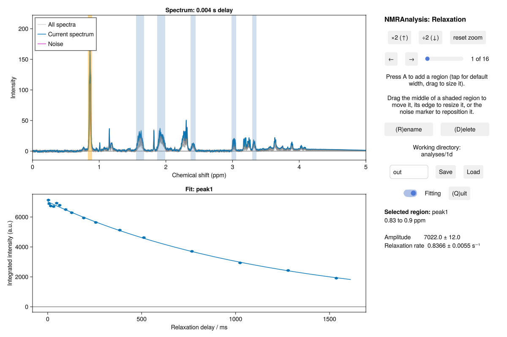

The 1D analysis window
The 1D routines (relaxation1d, diffusion1d, tract, calibration1d and kinetics1d) analyse a series of 1D spectra, usually recorded as one pseudo-2D experiment. Each opens the same window, in which you integrate one or more regions of the spectrum and see the fit update as you go. This is relaxation1d on a ¹H T₂ series:
using NMRAnalysis
relaxation1d(example("relaxation1d_aas"))
The spectra are overlaid at the top left, with the current one in colour. The shaded bands are the integration regions: the selected region is orange, the others blue. The purple marker is where the noise is measured. Below the spectra is the fit for the selected region, and its fitted values are on the right.
Controls
| To | Do this |
|---|---|
| Select a region | Move the cursor over it |
| Move a region | Drag its middle |
| Resize a region | Drag an edge, or hold Shift and scroll |
| Add a region | Press A for a default width, or hold A and drag |
| Rename the selected region | R |
| Delete the selected region | D |
| Move the noise marker | Drag it |
| Step through the spectra | ← → |
| Scale the spectra vertically | ↑ ↓ |
| Zoom | Drag a rectangle, or scroll |
| Close the window | Q |
The buttons on the right do the same. Fitting turns the fit off, to show the raw integrals. Save writes the results to the folder named beside it, and Load restores the regions saved there.
Integrate the whole of a peak, including its wings, and put the noise marker where there's no signal in any spectrum.
Parameters
Anything the analysis needs beyond the spectra, such as the relaxation delays, is read from the pulse-sequence annotations or the acquisition parameters. Whatever can't be found is asked for before the window opens. Pass it as a keyword to skip the question:
relaxation1d("11"; T=[0.01, 0.03, 0.06, 0.1])Outside an interactive session, or with prompt=false, nothing is asked: a missing value is an error that names the keyword to pass.
Uncertainties
The uncertainty of each integral is the standard deviation of integrals of the same width at the noise marker, across the series. It assumes a flat baseline under the marker.
Output
Save writes:
| File | Contents |
|---|---|
summary.txt | The data, the regions and the fitted values, with units |
results.csv | The fitted values for each region, with uncertainties |
series.csv | Each region's integral in each spectrum, with the fitted curve |
peaklist.csv | The regions and the noise position |
analysis.toml | The call, for reopen |
fit.pdf, regions/ | Plots of the fits, and each region's data |
A folder that already exists is first renamed <name>_previous. See Output and interface conventions for the column formats.
Reopen an analysis
reopen opens a saved analysis again, with the same parameters and regions:
reopen("out")Scripting
Each routine also returns its results, one per region, when the window closes. To run an analysis without the window, give the region as integration:
relaxation1d("11"; integration=(peakppm=8.2, noiseppm=-1.0, ppmwidth=0.5))pickregion opens a window to choose this region, without fitting.